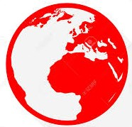

Bonjour !
Je m'appelle Juliette Bruyant et je suis étudiante en Master 2 de Communication interculturelle et traduction. J'effectue cette dernière année d'études en alternance à l'Opéra national de Paris, où je suis en charge de la gestion du Stage d'été de l'École de danse.
En parallèle, je suis membre du pôle Qualité de Junior ISIT, la Junior-Entreprise de l'ISIT.
J'ai vécu cinq ans aux États-Unis, passé quatre mois à Heidelberg en Allemagne dans le cadre de mon semestre Erasmus et effectué de nombreux séjours en Europe, de l'Espagne à la Lettonie. Je suis passionnée par l'apprentissage des langues, comme l'allemand, l'italien ou encore le roumain, langue à propos de laquelle j'ai écrit un article.
Ceci est un mémo pratique non exhaustif concernant l'usage de HTML5 en traduction de sites web, élaboré pour mon usage en propre pendant mes études à l'ISIT et que je partage ici volontiers.
